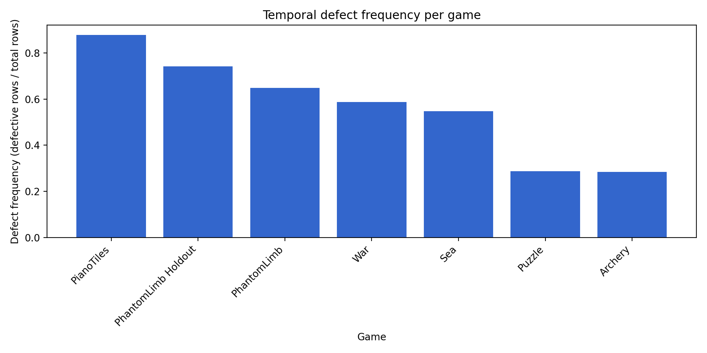
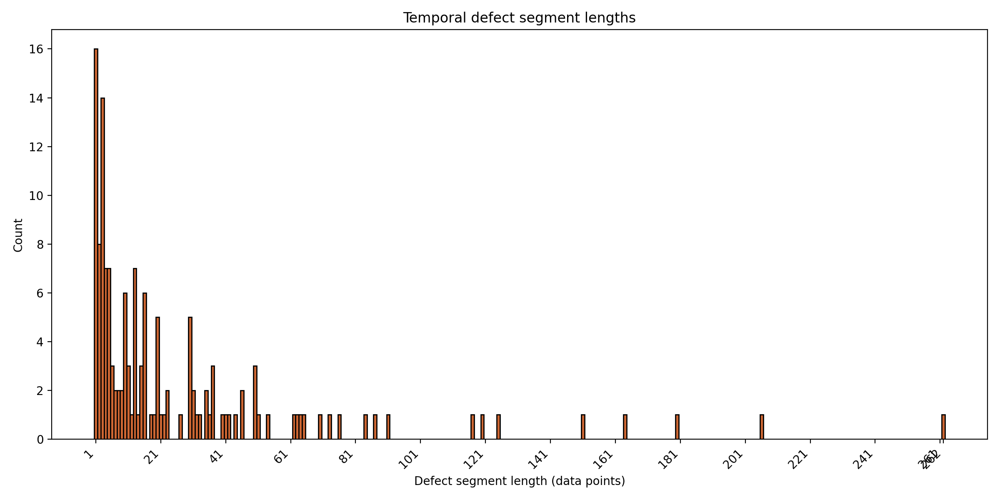
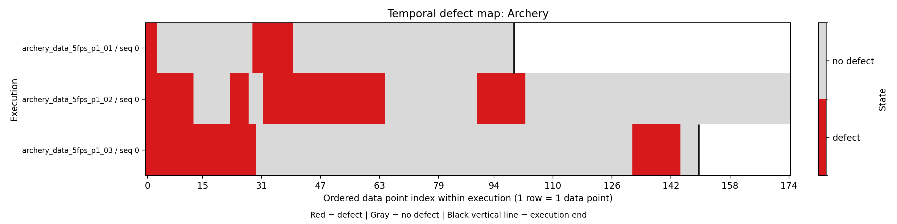
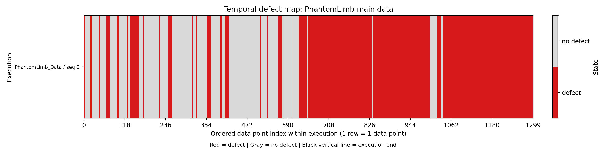
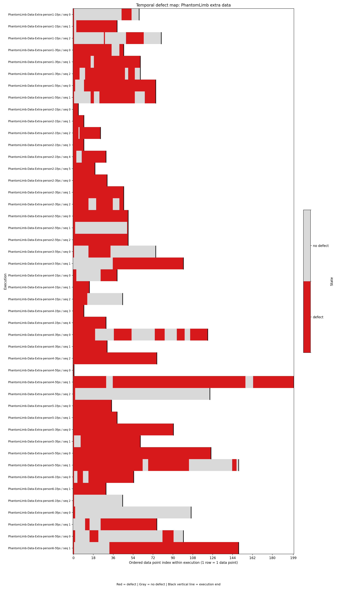
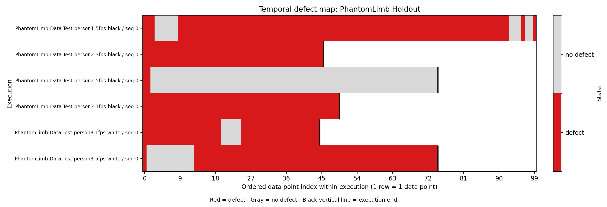
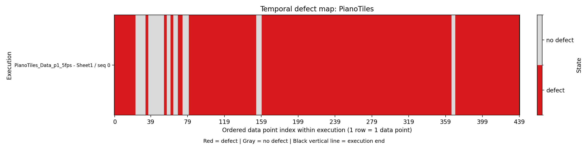
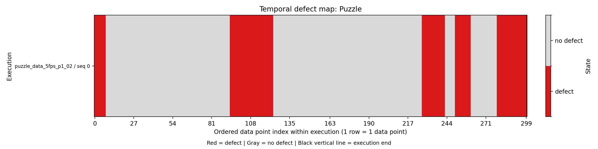
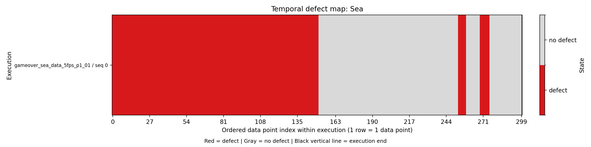
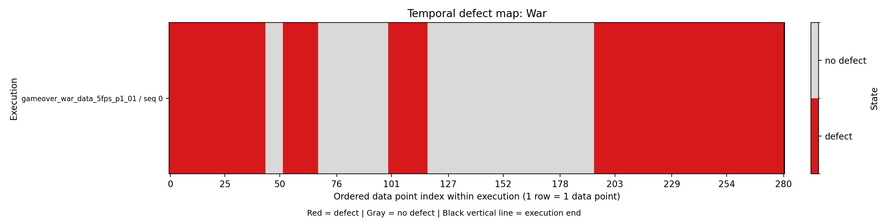

| Metric | Value |
|---|---|
| total rows | 6242 |
| total defects | 3875 |
| frequency | 0.621 |
| coverage | 62.1% |
| mean persistence | 26.9 data points |
| max persistence | 262.0 data points |
| instability_rate | 0.030 |


Defects occur in 62.1% of data points overall, with 62.1% of the full dataset affected. Defects are frequent overall and include several long-lasting segments, with mean persistence of 26.9 data points and instability_rate of 0.030.
| Severity Pattern | Definition | Rule |
|---|---|---|
| Short isolated defects | Low persistence, low coverage, and not classified as unstable. | Assigned when neither the long-lasting rule nor the unstable rule is triggered. |
| Unstable defects | Frequent switching between correct and defective states. | Assigned when instability_rate >= 0.15 and the long-lasting rule is not triggered. |
| Long-lasting defects | Defects persist for long continuous stretches or affect a large portion of the execution. | Assigned when coverage >= 0.30 OR max_persistence >= 0.20 * avg_execution_length. |
These severity patterns are based on configurable operational thresholds for this dataset.
| Threshold | Value |
|---|---|
| MINOR_MAX_LENGTH | 2 |
| MODERATE_MAX_LENGTH | 5 |
| SEVERE_MIN_LENGTH | 6 |
| COVERAGE_SEVERE_THRESHOLD | 0.30 |
| INSTABILITY_THRESHOLD | 0.15 |
| PERSISTENCE_RATIO_THRESHOLD | 0.20 |
| Game | Frequency | Coverage | Mean Persistence | Instability | Severity Type | Trigger Rule |
|---|---|---|---|---|---|---|
| Archery | 0.285 | 28.5% | 15.1 data points | 0.031 | long-lasting defects | long-lasting: persistence |
| PhantomLimb | 0.649 | 64.9% | 25.4 data points | 0.032 | long-lasting defects | long-lasting: coverage |
| PhantomLimb Holdout | 0.742 | 74.2% | 26.4 data points | 0.029 | long-lasting defects | long-lasting: coverage |
| PianoTiles | 0.877 | 87.7% | 48.2 data points | 0.032 | long-lasting defects | long-lasting: coverage |
| Puzzle | 0.287 | 28.7% | 17.2 data points | 0.027 | short isolated defects | short isolated: fallback |
| Sea | 0.547 | 54.7% | 54.7 data points | 0.017 | long-lasting defects | long-lasting: coverage |
| War | 0.587 | 58.7% | 41.2 data points | 0.021 | long-lasting defects | long-lasting: coverage |
| Metric | Value |
|---|---|
| Frequency | 0.285 |
| Coverage | 28.5% |
| Mean Persistence | 15.1 data points |
| Max Persistence | 33.0 data points |
| Instability Rate | 0.031 |

This game is classified as long-lasting defects, meaning defects persist for long stretches or affect a large part of the execution. This classification is triggered because max persistence = 33.0, which is above the threshold of 28.3 data points.
| Metric | Value |
|---|---|
| Frequency | 0.649 |
| Coverage | 64.9% |
| Mean Persistence | 25.4 data points |
| Max Persistence | 262.0 data points |
| Instability Rate | 0.032 |


This game is classified as long-lasting defects, meaning defects persist for long stretches or affect a large part of the execution. This classification is triggered because coverage = 0.649, which is above the threshold of 0.30.
| Metric | Value |
|---|---|
| Frequency | 0.742 |
| Coverage | 74.2% |
| Mean Persistence | 26.4 data points |
| Max Persistence | 84.0 data points |
| Instability Rate | 0.029 |

This game is classified as long-lasting defects, meaning defects persist for long stretches or affect a large part of the execution. This classification is triggered because coverage = 0.742, which is above the threshold of 0.30.
| Metric | Value |
|---|---|
| Frequency | 0.877 |
| Coverage | 87.7% |
| Mean Persistence | 48.2 data points |
| Max Persistence | 206.0 data points |
| Instability Rate | 0.032 |

This game is classified as long-lasting defects, meaning defects persist for long stretches or affect a large part of the execution. This classification is triggered because coverage = 0.877, which is above the threshold of 0.30.
| Metric | Value |
|---|---|
| Frequency | 0.287 |
| Coverage | 28.7% |
| Mean Persistence | 17.2 data points |
| Max Persistence | 30.0 data points |
| Instability Rate | 0.027 |

This game does not cross the configured long-lasting or unstable thresholds, although some defect segments are still moderately persistent. This classification is assigned because neither the long-lasting nor unstable thresholds were reached.
| Metric | Value |
|---|---|
| Frequency | 0.547 |
| Coverage | 54.7% |
| Mean Persistence | 54.7 data points |
| Max Persistence | 151.0 data points |
| Instability Rate | 0.017 |

This game is classified as long-lasting defects, meaning defects persist for long stretches or affect a large part of the execution. This classification is triggered because coverage = 0.547, which is above the threshold of 0.30.
| Metric | Value |
|---|---|
| Frequency | 0.587 |
| Coverage | 58.7% |
| Mean Persistence | 41.2 data points |
| Max Persistence | 87.0 data points |
| Instability Rate | 0.021 |

This game is classified as long-lasting defects, meaning defects persist for long stretches or affect a large part of the execution. This classification is triggered because coverage = 0.587, which is above the threshold of 0.30.